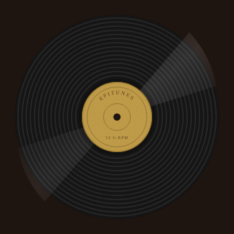

Nuovo utente
Compila i campi per registrarti a EpiTunes
Benvenuto su EpiTunes
Scegli almeno tre generi o artisti: li useremo per i tuoi suggerimenti in home.
Condividi EpiTunes
La musica è un forte strumento di comunicazione che unisce i cuori. Condividi la musica con i tuoi amici e invitali a usare EpiTunes.

Biografia
Impostazioni
Le modifiche si applicano subito